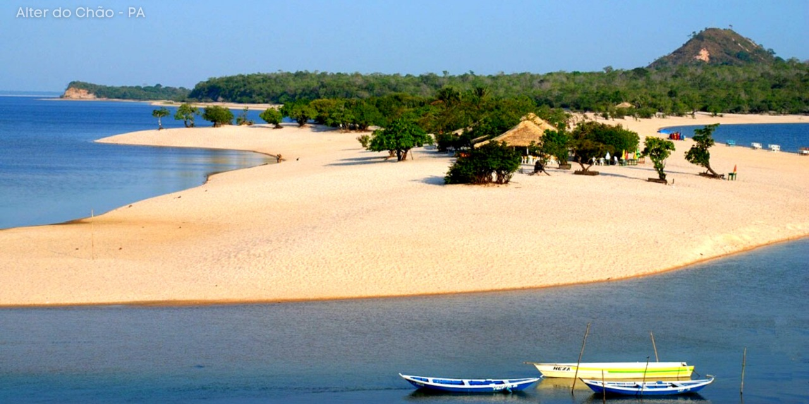
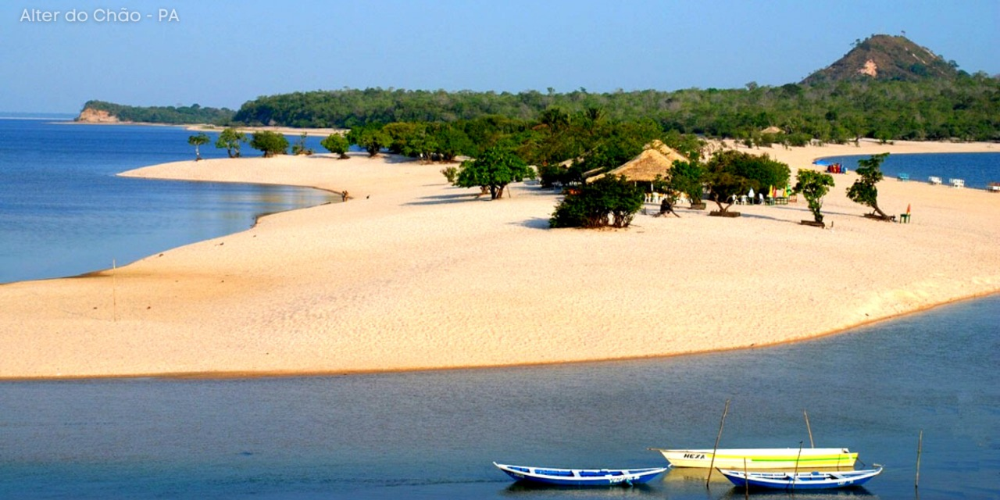
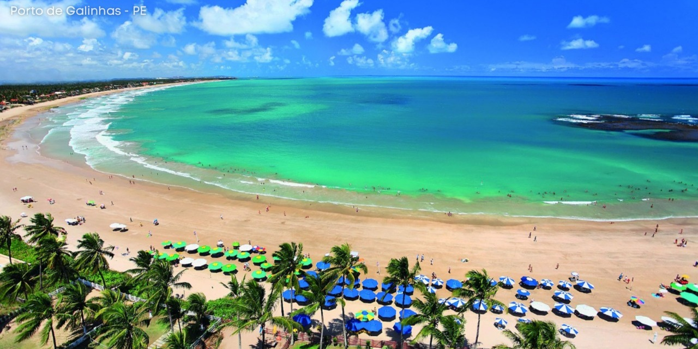
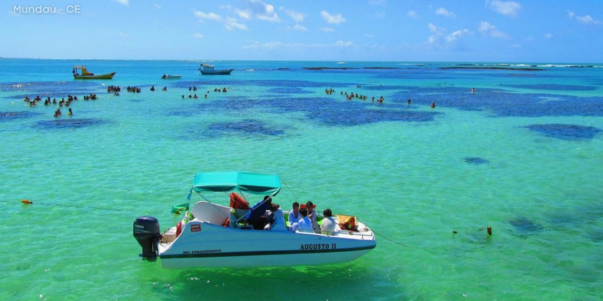
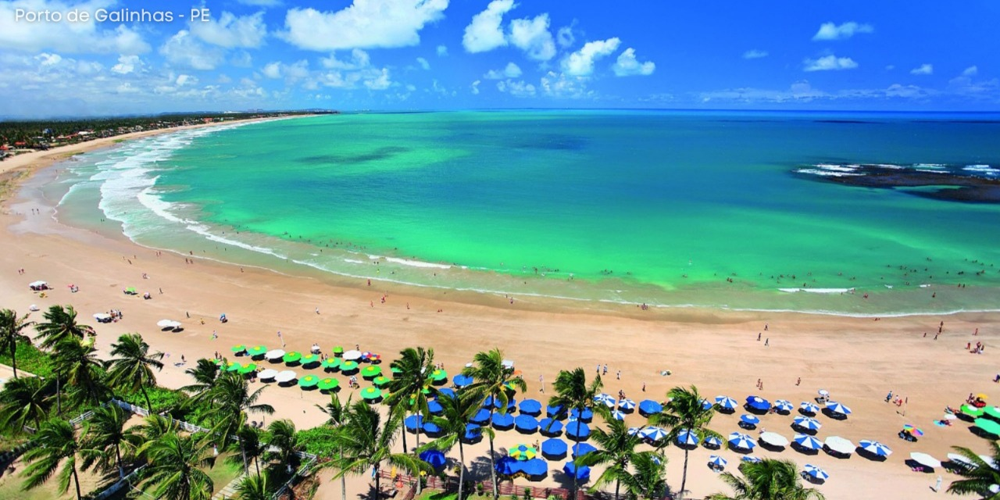
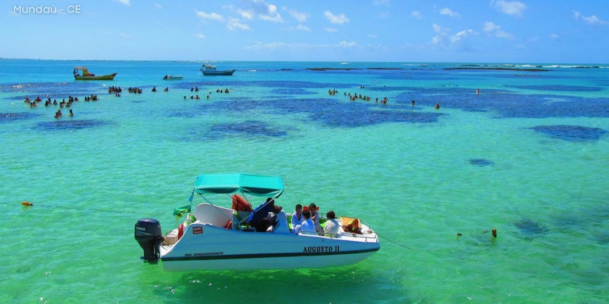

 




Brasil: Terra de mil encantos!
Brasil, um país como nenhum outro no mundo. Sua enorme diversidade cultural, tantas paisagens, belezas naturais e variedade climática são um atrativo para qualquer turista, brasileiro ou estrangeiro. Água doce ou água salgada, montanhas ou cerrado, mata atlântica ou floresta amazônica, megacidades ou cidadelas bem no coração do país, o Brasil tem destinos para todos os gostos. Viajar pelo Brasil é uma tendência, e não faltam motivos para se apaixonar por tantas atrações, algumas delas certamente estão próximas de você! Bora escolher um destino nacional para a sua próxima viagem?
Cidades
As cidades históricas chamam a atenção de milhares de turistas todos os anos. A possibilidade de andar por ruas onde a história do país foi escrita ou, simplesmente, passear por uma viela que parece ter parado no tempo não tem preço. Um bom exemplo disso é a cidade de Ouro Preto em Minas Gerais. A cidade é toda de arquitetura barroca e remonta aos tempos coloniais do Brasil. Comece visitando a cidade pelas igrejas de São Francisco de Assis, Nossa Senhora das Mercês e da Misericórdia, depois procure pelo Museu da Inconfidência Mineira. Ouro Preto é um verdadeiro tesouro para os amantes de história.
Já as grandes metrópoles oferecem todo tipo de entretenimento. Cinema, museus, incontáveis locais para compras, gastronomia variada, esportes de todo tipo, festivais de música e eventos sociais e, principalmente, muitas pessoas para conhecer, conviver e trocar experiências. Além disso, há possibilidade de passar um tempo ao ar livre com áreas verdes e parques, como o Ibirapuera na megalópole de São Paulo.
Natureza
Impossível falar de Brasil sem falar de praia. São mais de 7.000 km de litoral dos mais variados tipos e todos os anos, seja no verão ou em qualquer das estações, milhões de turistas visitam estas praias.
Entre as melhores praias do país estão as que pertencem ao arquipélago de Fernando de Noronha, localizado a cerca de 350km da costa de Pernambuco, e que oferece lindas paisagens e a possibilidade de mergulho com a presença de tartarugas marinhas, golfinhos e tubarões.
Não gosta de sol e areia, então que tal fazer um belo passeio junto à natureza? O ecoturismo brasileiro está cada vez mais consolidado e preparado para receber visitantes. Arvorismo, tirolesa, rapel, trilhas na mata são atividades com experiência imersiva na natureza rotineiras no parque ecológico de Morretes, o Ekôa Park.
Gastronomia
Precisa de um motivo realmente gostoso para viajar pelo Brasil? Que tal provar a enorme variedade gastronômica espalhada pelo país? A cozinha brasileira possui influência de diferentes nacionalidades, como italiana, portuguesa e africana. O resultado dessa mistura é uma culinária rica em sabores e grande diversidade de pratos.
Ao viajar pelos destinos nacionais você poderá degustar de comidas do mundo todo, mas com o "jeitinho brasileiro". Nossa riqueza gastronômica é invejável. De norte a sul, leste a oeste a culinária típica é muito diferenciada.
No estado do Rio de Janeiro gastronomia e cultura estão tão entrelaçadas que virou até lei. Já em Florianópolis, "Floripa" para os íntimos, uma das cidades mais visitadas do Brasil, a diversidade gastronômica se mistura a belíssimas praias, um povo acolhedor e programas para toda a família, é um dos melhores destinos para os turistas.